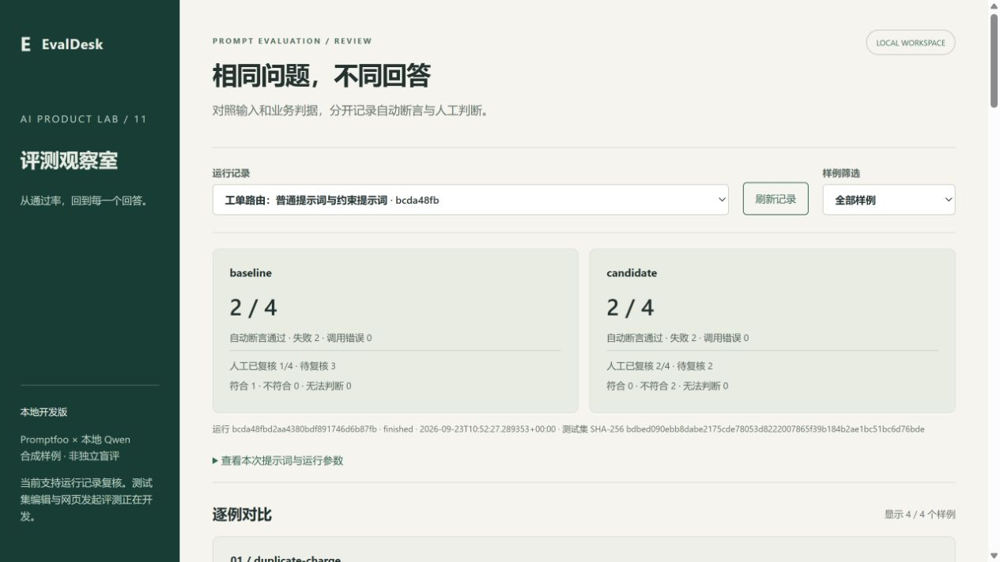
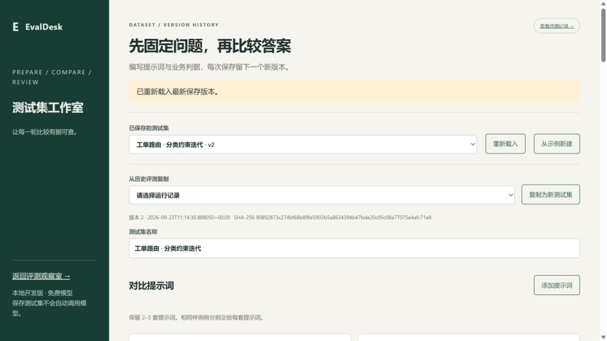

{kind=link}
{kind=link}
44 项自动测试
覆盖受限配置、完整结果矩阵、证据哈希、审核冲突、报告冻结、测试集版本、幂等任务、进程状态与恢复事务；另验证访客隔离、额度和清理边界。远程检查状态可在仓库 Actions 查看。
独立学习项目 / EVALDESK / v0.1
改了提示词，究竟修复了什么，又引入了什么错误？固定测试集版本，把自动检查、原始输出和人工判断放在一起，保留每次迭代的依据。
打开演示即可查看真实合成工单评测；也可以修改测试集、保存版本、执行评测，再逐例复核和冻结报告。每位访客独立空间，会话30分钟，每会话最多2个任务、每任务12次调用。全站同时只执行一个任务，不自动排队。
入口依赖开发机与临时隧道，尚非稳定云托管。请使用合成资料，输入在演示服务器处理。免费小模型可能分类错误；自动通过与人工确认分别统计。
01 / 产品流程
编辑两到三套提示词、样例、业务判据与确定性断言。保存时记录版本说明和哈希，历史版本只读。过期编辑不能覆盖新版本，保存不会自动调用模型。
选择保存版本后启动独立工作进程。请求标识防止重复启动，记录进程身份与运行日志；关闭网页不会取消评测。完成后自动校验并导入结果。
并排查看候选输出，区分断言失败与模型调用错误。逐例填写判断和理由，保留修订历史与待复核状态，不用格式通过率代替业务正确率。
报告保存当时的结果和判断，后续复核不改写旧报告。任务证据包含测试集、配置、结果、日志与哈希；完整结果可在进程结束后恢复导入，不重复调用模型。

本机浏览器实操截图，自动结果与人工复核独立记录。

历史回看、版本说明和显式执行连接成迭代流程。
02 / 验证记录
覆盖受限配置、完整结果矩阵、证据哈希、审核冲突、报告冻结、测试集版本、幂等任务、进程状态与恢复事务；另验证访客隔离、额度和清理边界。远程检查状态可在仓库 Actions 查看。
首轮四个样例，两套提示词均为2/4精确标签断言通过。扩展到五例后，基线3/5、候选2/5：退款标签被修复，但缺失上下文和发票场景仍出错。样例集不同，不能跨轮直接比较通过率，也不是真实用户准确率。
真实任务在网页服务停止前确认工作进程存活，重启网页服务后仍完成。另在隔离数据库中主动模拟导入中断，恢复十个已有真实结果并保留模拟错误；这不是自然发生的生产故障。
HTTP双访客验证真实任务、复核、报告和跨访客404；浏览器另完成一轮八次调用与报告，实际点击390px手机导航。TTL通过自动测试验证，未在浏览器等待完整30分钟。
示例库已接入 FeedbackLens 与 ChangeLens 各六个已知开发样例，两方案共24次真实调用。格式检查可能放过顶层结构错误和指令污染，也可能拒绝带代码围栏但业务内容正确的回答，因此保留两种判断，不合并成准确率。
运行参数与原工具不同，这是一份新基线；由同一 AI 开发代理逐例复核，不属于独立盲测。查看完整结果、逐例报告与边界 ↗
新增反馈与变更说明两种固定结构规则，检查必填字段、类型、长度和额外字段。原样重放24个回答，额外识别出顶层数组错误；另用网页启动两次真实调用，验证该结构错误能进入任务结果和逐例复核。旧评测与报告不改写。
结构通过仍可能含编造引用或错误业务解释。查看结构校验的实测与限制 ↗
03 / 工程取舍
直接复用 MIT 开源的 Promptfoo 0.123.1 作为执行引擎，复用 psutil 核查进程身份。增量包括中文版本化编辑器、受限配置编译、任务幂等、结果校验、人工复核、恢复事务和访客演示包装；来源与许可随源码保留。
当前只允许固定本地模型与文本、JSON 与固定结构断言，不接收脚本或自定义模型服务。无法核实进程时保留待核查状态，需管理员处理；尚无取消、多机调度和账户认证。哈希用于发现证据变化，不是数字签名。
本项目借助 AI 编程协作开发，验证使用合成资料与开发者复核，不属于独立盲测。源码发布在个人主页仓库 projects/evaldesk，不宣称真实客户使用成效。
修复访客上传途中会话过期导致数据库提前清理的问题。新增正常上传、超大输入和额度拒绝三项回归，完整测试现为44项。查看复现与验证范围 ↗